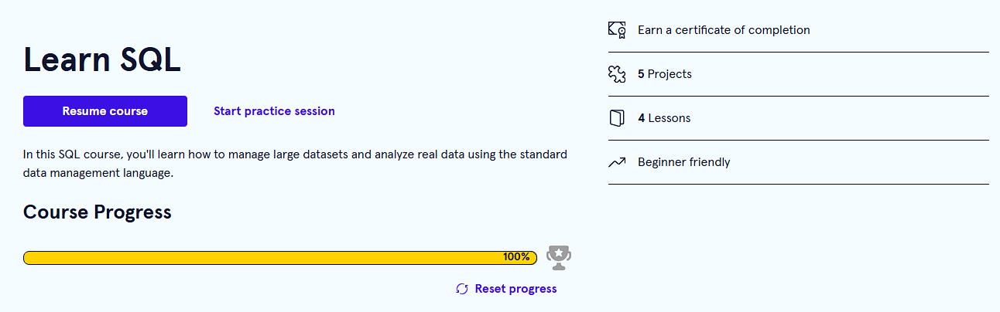

Current Focus
SQL, Python, data cleaning, business questions, and turning analysis into clear insights.
Aspiring Junior Data Analyst
I’m a self-taught learner building skills in SQL, Python, and data analysis through portfolio projects, public practice, and thoughtful problem solving.
I am a self-taught learner building toward a strong Junior Data Analyst role and, over time, a future in data science. I study through free resources, practice with real datasets, and document my growth publicly so I can become more confident and career-ready.
SQL, Python, data cleaning, business questions, and turning analysis into clear insights.
I learn by practicing: writing queries, debugging code, asking better questions, and explaining findings clearly.
Become employable in data analysis, grow into data science, and contribute to meaningful, remote-friendly work.
Here is a simple view of my current progress and the habits I’m building.
Learning joins, filters, aggregation, and data cleaning.
Practicing variables, functions, pandas, and simple analysis.
Building the habit of asking questions and presenting insights clearly.

Codecademy — Learn SQL (completion screenshot)
Practicing one SQL problem and writing one short insight from the results.
These projects reflect the skills I’m building as I move from beginner practice to professional-style analysis.
A public site that highlights my learning path, projects, and professional growth.
Queries and notes focused on selecting data, joining tables, and answering business questions.
Small projects using real data to practice cleaning, analysis, and simple visual storytelling.
Learning how to turn raw numbers into clear recommendations a team could actually use.
Recent milestones and course completions I’m proud to share.
Completed the Learn SQL course on Codecademy. Practiced querying, joins, and aggregation.
Completion: July 2026
Tools and techniques I’m strengthening as I grow into a professional data analyst.
Writing queries, using joins, grouping data, and answering business-focused questions.
Using pandas, cleaning messy data, and building simple analysis workflows.
Interpreting results, spotting patterns, and communicating insights clearly.
I’m always happy to connect about projects, questions, mentorship, or collaboration.
I’m building projects that show how data can answer business questions clearly and practically.